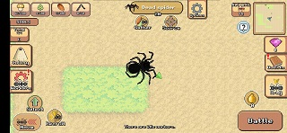

Truques e dicas do Pocket Ants: guia para criaturas, batalhas e muito mais
3 de Setembro de 2024 por Rodrigo
Pocket Ants: Colony Simulator é um jogo popular para celular onde você constrói um esquadrão de formigas e criaturas, batalha contra formigas inimigas, ataca outros jogadores e melhora o ninho. Continue lendo para dicas e truques do Pocket Ants apresentados com um guia para iniciantes; criaturas, batalhas, pedras e muito mais
